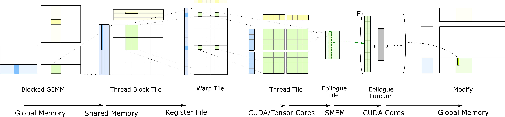
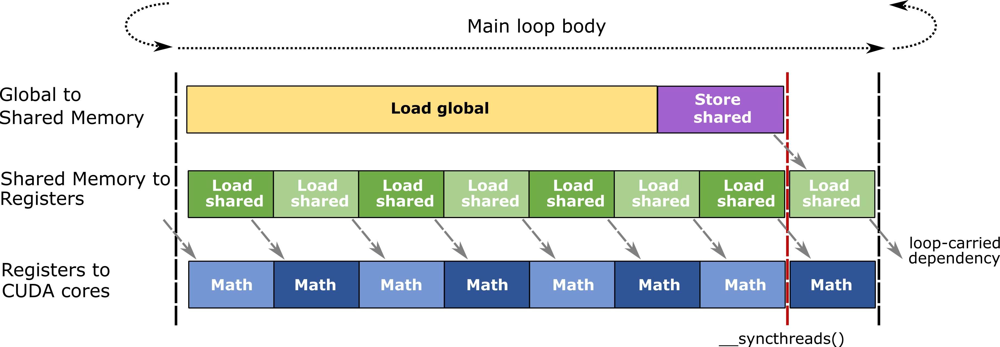

Efficient GEMM in CUDA
CUTLASS implements the hierarchically blocked structure described in CUTLASS: Fast Linear Algebra in CUDA C++ and the CUTLASS GTC2018 talk.
Hierarchical Structure
The basic triple loop nest computing matrix multiply may be blocked and tiled to match concurrency in hardware, memory locality, and parallel programming models. In CUTLASS, GEMM is mapped to NVIDIA GPUs with the structure illustrated by the following loop nest.
for (int cta_n = 0; cta_n < GemmN; cta_n += CtaTileN) { // for each threadblock_y } threadblock-level concurrency
for (int cta_m = 0; cta_m < GemmM; cta_m += CtaTileM) { // for each threadblock_x }
for (int cta_k = 0; cta_k < GemmK; cta_k += CtaTileK) { // "GEMM mainloop" - no unrolling
// - one iteration of this loop is one "stage"
//
for (int warp_n = 0; warp_n < CtaTileN; warp_n += WarpTileN) { // for each warp_y } warp-level parallelism
for (int warp_m = 0; warp_m < CtaTileM; warp_m += WarpTileM) { // for each warp_x }
//
for (int warp_k = 0; warp_k < CtaTileK; warp_k += WarpTileK) { // fully unroll across CtaTileK
// - one iteration of this loop is one "k Group"
//
for (int mma_k = 0; mma_k < WarpTileK; mma_k += MmaK) { // for each mma instruction } instruction-level parallelism
for (int mma_n = 0; mma_n < WarpTileN; mma_n += MmaN) { // for each mma instruction }
for (int mma_m = 0; mma_m < WarpTileM; mma_m += MmaM) { // for each mma instruction }
//
mma_instruction(d, a, b, c); // TensorCore matrix computation
} // for mma_m
} // for mma_n
} // for mma_k
} // for warp_k
} // for warp_m
} // for warp_n
} // for cta_k
} // for cta_m
} // for cta_nThis tiled loop nest targets concurrency among - threadblocks, - warps, and - CUDA and Tensor Cores.
It takes advantage of memory locality within - shared memory and - registers.
The figure below illustrates the flow of data within this structure. This is the hierarchical GEMM computation embodied by CUTLASS. Each stage depicts a nested level of tiling which corresponds to a layer of concurrency within the CUDA execution model and to a level within the memory hierarchy, becoming increasingly finer moving left to right.

Threadblock-level GEMM
Each threadblock computes its portion of the output GEMM by iteratively loading tiles of input matrices and computing an accumulated matrix product. At the threadblock level, data are loaded from global memory. The blocking strategy in general is key to achieving efficiency. However, the programmer must balance multiple conflicting goals. A larger threadblock means fewer fetches from global memory, thereby ensuring that DRAM bandwidth does not become a bottleneck. However, large threadblock tiles may not match the dimensions of the problem well. If either the GEMM M or N dimension is small, some threads within the threadblock may not perform meaningful work, as the threadblock may be partially outside the bounds of the problem. If both M and N are small while K is large, this scheme may launch relatively few threadblocks and fail to make full use of all multiprocessors within the GPU. Strategies to optimize performance for this case, as described in the section Parallelized Reductions, partition the GEMM K dimension across multiple threadblocks or multiple warps. These threadblocks or warps compute matrix products in parallel; the products are then reduced to compute the result.
In CUTLASS, the dimensions of the threadblock tile are specified as ThreadblockShape::{kM, kN, kK} and may be tuned to specialize the GEMM computation for the target processor and dimensions of the GEMM problem.
Warp-level GEMM
The warp-level GEMM maps to the warp-level parallelism within the CUDA execution model. Multiple warps within a threadblock fetch data from shared memory into registers and perform computations. Warp-level GEMMs may be implemented either by TensorCores issuing mma.sync or wmma instructions, or by thread-level matrix computations issued to CUDA cores. For maximum performance, access to shared memory should be bank conflict free. To maximize data reuse within the warp, a large warp-level GEMM tile should be chosen.
Thread-level GEMM
At the lowest level of blocking, each thread is responsible for processing a certain number of elements. Threads cannot access each other’s registers, so we choose an organization that enables reuse of values held in registers for multiple math instructions. This results in a 2D tiled structure within a thread, in which each thread issues a sequence of independent math instructions to the CUDA cores and computes an accumulated outer product.
SGEMM, IGEMM, HGEMM, and DGEMM are computed by SIMT math instructions issued by thread-level matrix multiply procedures.
Epilogue
The above code focuses only on the matrix multiply computation C = AB whose result is held in the registers of each thread within the threadblock. The mapping of logical elements in the output tile to each thread is chosen to maximize performance of the matrix multiply computation but does not result in efficient, coalesced loads and stores to global memory.
The epilogue is a separate phase in which threads exchange data through shared memory then cooperatively access global memory using efficient striped access patterns. It is also the phase in which linear scaling and other elementwise operations may be conveniently computed using the matrix product results as inputs.
CUTLASS defines several typical epilogue operations such as linear scaling and clamping, but other device-side function call operators may be used to perform custom operations.
Optimizations
The hierarchical structure described above yields an efficient mapping to the CUDA execution model and CUDA/TensorCores in NVIDIA GPUs. The following sections describe strategies for obtaining peak performance for all corners of the design space, maximizing parallelism and exploiting data locality wherever possible.
Pipelining
The blocked structure demands a large storage allocation within the registers of each CUDA thread. The accumulator elements typically occupy at least half a thread’s total register budget. Consequently, occupancy – the number of concurrent threads, warps, and threadblocks – is relatively low compared to other classes of GPU workloads. This limits the GPU’s ability to hide memory latency and other stalls by context switching to other concurrent threads within an SM.
To mitigate the effects of memory latency, CUTLASS uses software pipelining to overlap memory accesses with other computation within a thread. CUTLASS accomplishes this by double buffering at the following scopes.
Threadblock-scoped shared memory tiles: two tiles are allocated in shared memory. One is used to load data for the current matrix operation, while the other tile is used to buffer data loaded from global memory for the next mainloop iteration.
Warp-scoped matrix fragments: two fragments are allocated within registers. One fragment is passed to CUDA and TensorCores during the current matrix computation, while the other is used to receive shared memory fetch returns for the next warp-level matrix operation.
The following diagram illustrates the efficient, pipelined mainloop body used in CUTLASS GEMMs.

Threadblock Rasterization
To maximize reuse of data held in the last level cache, CUTLASS defines several functions to affect the mapping of threadblocks to logical partitions of the GEMM problem. These map consecutively launched threadblocks to packed two-dimensional regions of the partitioned GEMM problem to increase the probability that these will access the same tiles of global memory at approximately the same time.
Several functions are defined in cutlass/gemm/threadblock_swizzle.h.
Parallelized Reductions
Split K - reduction across threadblocks
Matrix product computations expose parallelism among O(MN) independent inner product computations. For sufficiently large problem sizes, a GEMM kernel in CUTLASS may approach the theoretical maximum computational throughput. For small problems, however, there are too few threadblocks to efficiently occupy the entire GPU.
As a recourse, parallelizing the reduction performed during the inner product computation enables more threadblocks to execute concurrently while still taking advantage of the throughput benefits of large threadblock-level GEMM tiles.
CUTLASS implements parallel reductions across threadblocks by partitioning the GEMM K dimension and launching an additional set of threadblocks for each partition. Consequently, we refer to this strategy within CUTLASS as “parallel reduction splitK.” The “parallel reduction splitK” strategy requires the execution of 2 kernels: partitionedK GEMM, and batched reduction.
PartitionedK GEMM resembles one flavor of batched strided GEMM. Instead of requiring users to specify the problem size of each batch, partitionedK GEMM asks for the overall problem size and the number of partitions that will be applied along the K dimension for operands A and B. For example, parameters of m=128, n=128, k=4096 and partition=16 will result in 16 batched strided GEMMs with each batch of m=128, n=128, k=256. PartitionedK also allows scenario where k is not divisible by the partition count.
For example, parameters of m=128, n=128, k=4096 and partition=20 will result in 20 batched strided GEMMs. The first 19 batches will have m=128, n=128, and k=4096/20=204, and the last batch will have m=128, n=128, and k=220.
The batched reduction kernel takes as input the output (C) of partitionedK GEMM, and performs a reduction along the K-dimension. Users must manage workspace memory to store this intermediate result.
Sliced K - reduction across warps
Similar to the split-k scenario, sliced-k aims at improving the efficiency of kernels with smaller M and N dimensions, but large K dimension. At the thread-block level, the parameters CtaTileN and CtaTileM expose parallelism by partitioning the work among warps. Larger warpTiles expose better instruction-level parallelism (ILP) and reuse, but also limit the number of warps running per threadblock, which reduces efficiency.
In order to improve efficiency in such scenarios, partitioning the warpTiles also along ctaTileK helps use the hardware more efficiently by allowing more warps to run concurrently in a CTA. Sliced-k kernels break down a threadblock’s computation among participating warps not just among the CtaTileN, CtaTileM dimension, but also the CtaTileK dimension. Thus, sliced-k entails a small cost in form of a reduction which has to happen at the end among the participating warps. This is because each warp computes using only a “slice” of CtaTileK, so each warp only has a partial sum before the reduction.
Hopper Warp Specialization
Note: the following section on warp-specialization contains details that are specific to the Hopper kernel design. Blackwell SM100 kernels have a substantially different warp-specialization structure, however, the concept of separating out producer and consumer agents still applies.
Starting with Hopper, CUTLASS 3.0 incorporates the concept of Warp Specialization as part of the kernel design. A thread block is partitioned into two sets of warps, producer warp group and consumer warp group. The producer warp group loads data from global memory into shared memory buffers using the new Tensor Memory Accelerator (TMA).
Producer warp group (DMA) waits for the shared memory buffers to be signaled as empty by the consumer warp group using the newly added Async Pipeline class (refer). Once the data is written into the shared memory, TMA is also updates the barrier associated with that stage to notify affected threads that the buffer has been filled. The Consumer warp group (MMA) on the other hand waits for the producer warp group to signal that the buffer is filled and then launches tensor core MMA operations. Finally, the consumer warp group releases the buffers for the next set of TMA loads to happens.
Warp-Specialized Persistent Cooperative kernel design
Another flavor of Warp-Specialized kernel design being introduced starting with Hopper is the Warp-Specialized Persistent Cooperative kernel. Like the Warp-Specialized kernel, the concepts of warp groups and barrier synchronization between warp groups remain the same in the cooperative design. The distinctive feature of the Warp-Specialized Persistent Cooperative kernel are the following : * Persistent thread blocks launched to occupy as many SMs as mentioned in the KernelHardwareInfo struct. These persistent thread blocks are used to tile the output and thus (potentially) compute multiple output tiles through their lifetime. The main benefit this adds is amortization of the thread-block launch and kernel prologue overheads which are typical of all kernels. * Presence of two consumer warp groups cooperating on the same output tile by splitting the tile in half across the M dimension. This allows for larger tile sizes to be enabled - since the register pressure per consumer warp group is reduced - and hence improving performance.
Since each thread block now computes multiple output tiles, the shape of the grid launch and the scheduling of tiles to the thread blocks is managed using the new Tile Scheduler. The Tile Scheduler considers the shape of the clusters as well as the available number of available SMs to compute a valid scheduling of the output tiles to launched thread blocks.
Warp-Specialized Persistent Ping-Pong kernel design
The third kernel design is the Warp-Specialized Persistent Ping-Pong kernel. Like the Warp-Specialized Persistent Cooperative, kernel the concepts of warp groups, barrier synchronization between warp groups, and the shape of the grid launch remain the same in the persistent ping-pong design. The distinctive feature of the Warp-Specialized Persistent Ping-Pong kernel is the following : * The two consumer warp groups are assigned a different output tile using the Tile Scheduler. This allows for epilogue of one consumer warp group to be overlapped with the math operations of the other consumer warp group - thus maximizing tensor core utilization. * The producer warp group synchronizes using the Ordered Sequence Barrier to fill buffers of the two consumer warp groups one after the other in order.
Resources
The following additional resources describe design and implementation details of GEMMs targeting NVIDIA GPUs.
- Developing CUDA Kernels to Push Tensor Cores to the Absolute Limit on NVIDIA A100. (SR 21745)
- CUTLASS: Fast Linear Algebra in CUDA C++
- CUTLASS: SOFTWARE PRIMITIVES FOR DENSE LINEAR ALGEBRA AT ALL LEVELS AND SCALES WITHIN CUDA
- Programming Tensor Cores: NATIVE VOLTA TENSOR CORES WITH CUTLASS
- CUDA Programming Guide: warp matrix functions
- Matrix Multiply Accumulate Instructions
Copyright
Copyright (c) 2017 - 2025 NVIDIA CORPORATION & AFFILIATES. All rights reserved. SPDX-License-Identifier: BSD-3-Clause
Redistribution and use in source and binary forms, with or without
modification, are permitted provided that the following conditions are met:
1. Redistributions of source code must retain the above copyright notice, this
list of conditions and the following disclaimer.
2. Redistributions in binary form must reproduce the above copyright notice,
this list of conditions and the following disclaimer in the documentation
and/or other materials provided with the distribution.
3. Neither the name of the copyright holder nor the names of its
contributors may be used to endorse or promote products derived from
this software without specific prior written permission.
THIS SOFTWARE IS PROVIDED BY THE COPYRIGHT HOLDERS AND CONTRIBUTORS "AS IS"
AND ANY EXPRESS OR IMPLIED WARRANTIES, INCLUDING, BUT NOT LIMITED TO, THE
IMPLIED WARRANTIES OF MERCHANTABILITY AND FITNESS FOR A PARTICULAR PURPOSE ARE
DISCLAIMED. IN NO EVENT SHALL THE COPYRIGHT HOLDER OR CONTRIBUTORS BE LIABLE
FOR ANY DIRECT, INDIRECT, INCIDENTAL, SPECIAL, EXEMPLARY, OR CONSEQUENTIAL
DAMAGES (INCLUDING, BUT NOT LIMITED TO, PROCUREMENT OF SUBSTITUTE GOODS OR
SERVICES; LOSS OF USE, DATA, OR PROFITS; OR BUSINESS INTERRUPTION) HOWEVER
CAUSED AND ON ANY THEORY OF LIABILITY, WHETHER IN CONTRACT, STRICT LIABILITY,
OR TORT (INCLUDING NEGLIGENCE OR OTHERWISE) ARISING IN ANY WAY OUT OF THE USE
OF THIS SOFTWARE, EVEN IF ADVISED OF THE POSSIBILITY OF SUCH DAMAGE.